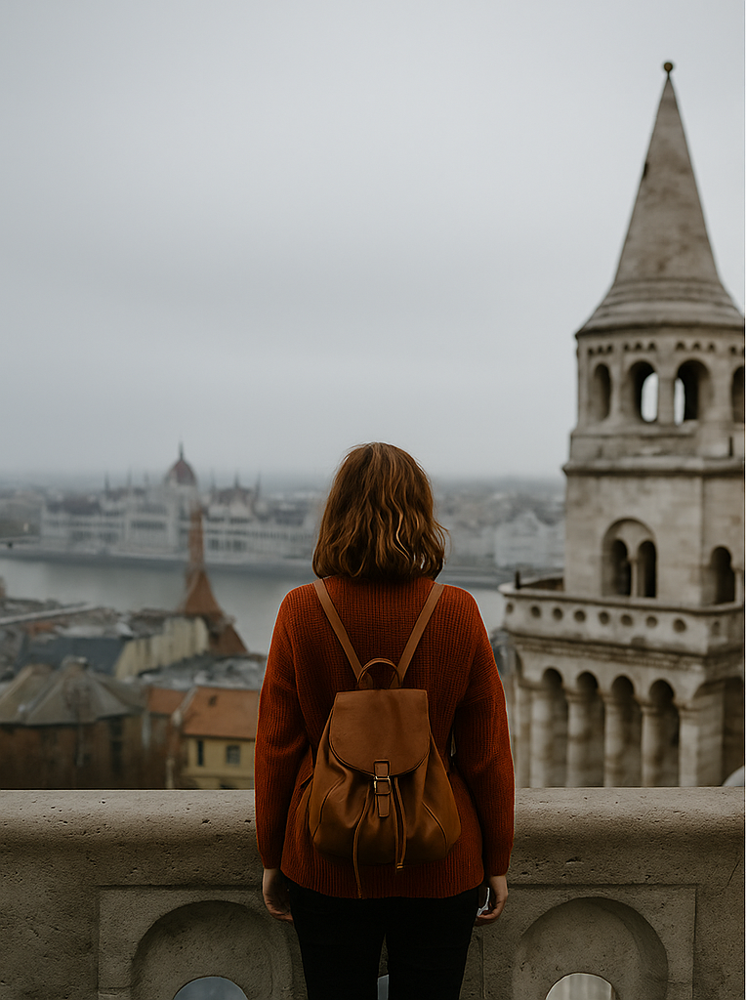
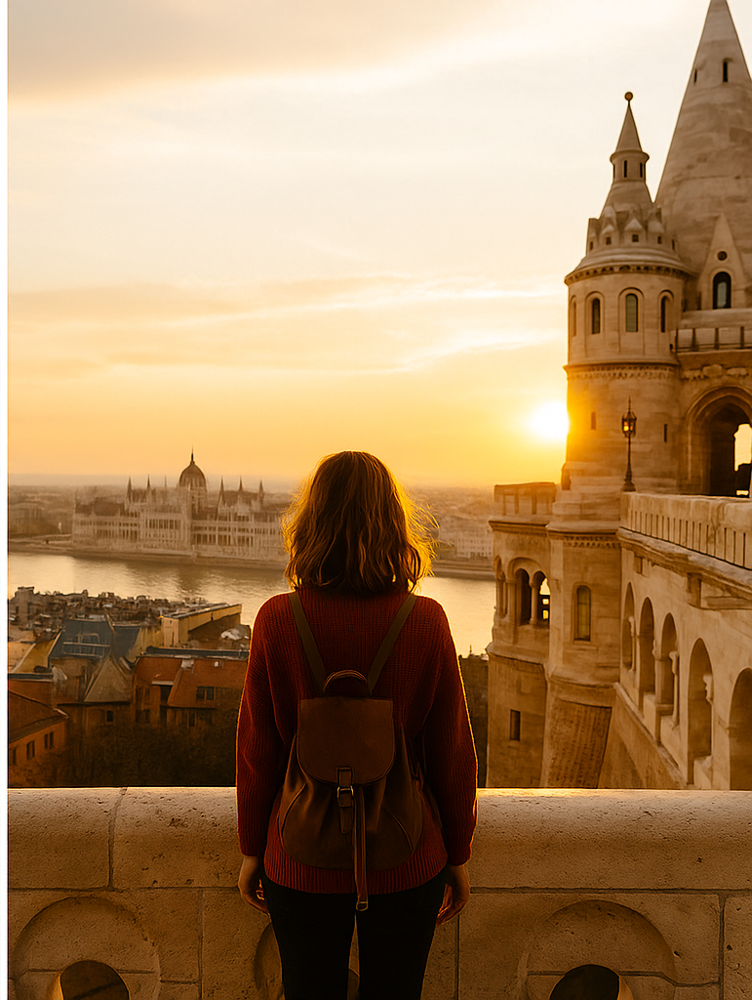

📸 Lær at tage det perfekte rejsebillede
Før & Efter
 
Træk i skyderen for at se forskellen.
3 hurtige fototips:
Gylne time:
Tag billeder morgen/aften – lyset er blødere og mere flatterende.
Regel om tredjedele:
Undgå at placere motivet i midten. Del billedet i tredjedele og placer det vigtige element ved skæringspunkterne.
Dybde:
Brug forgrund eller baggrund til at skabe dybde og gøre billedet mere interessant.
Quiz: Hvilket billede er bedst?